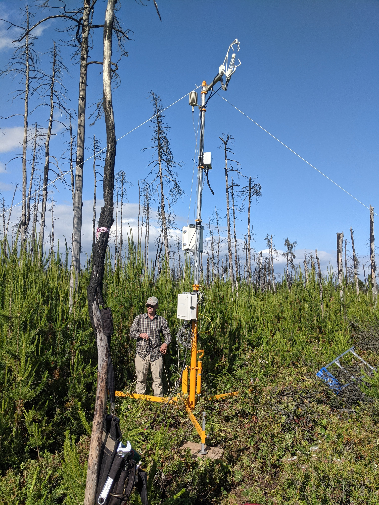
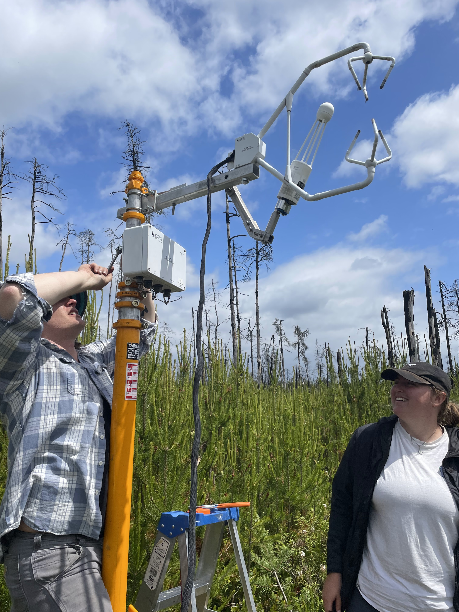
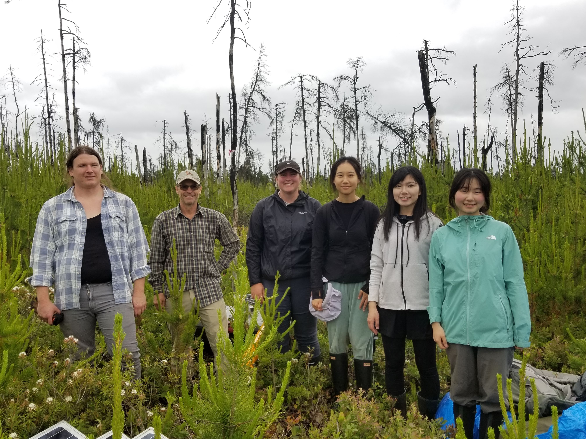
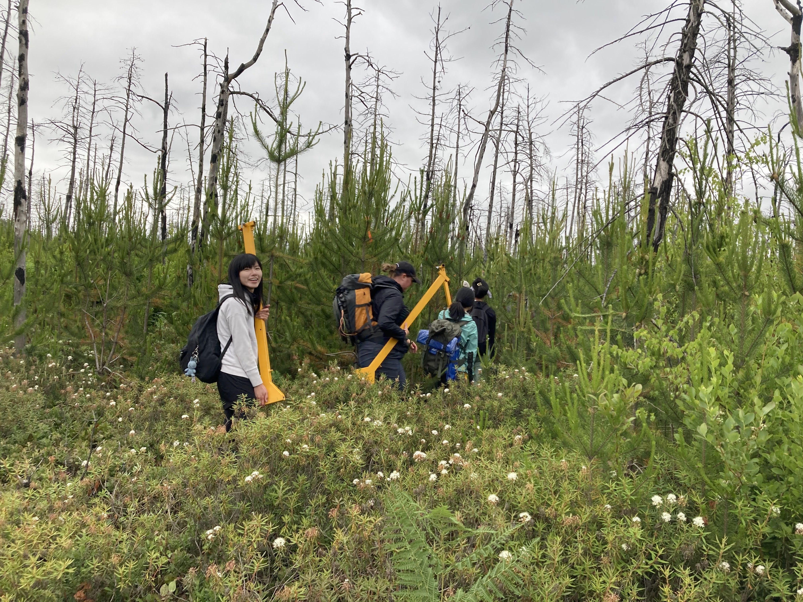

Outreach and News
2025
July
An article featuring our work in Futurum Careers, a STEM outreach magazine:
June
We had a great time at the lab barbecue!

April
Watch the CARBONIQUE team set up two eddy covariance flux towers (5m and 22m) in an open and wooded bog peatland at the Lac-à-la-Tortue peatland complex.
February
I spoke about the importance of wetlands with McGill Research and Innovation on World Wetlands Day:
2024
December
A LeDevoir paper highlighting our CARBONIQUE research project:
November
UQAM University paper on the CARBONIQUE research project:
October
An FluxNet blog post highlighting some of our workshops during the FLUXNET-CH4 V2.0 Data Processing Workshop event:
2023
November
A talk I gave during the Tipping Discussion Series Event on Methane organized by AIMES, the Earth Commission, Future Earth, and the WCRP Safe Landing Climates Lighthouse Activity on “Network science: unlocking novel insights on regional and global methane cycling”.
June
A new short-term flux tower was installed at the Burns Bog Seedling site to monitor CO2 fluxes from a 7-year old lodge-pole pine stand that sprouted following a fire in Burns Bog.




May
June and I presented at the CGU Annual meeting which was held in Banff this year. 

2022
December
A recent talk I gave during the UBC IRES Seminar Series on ‘Wetlands in a changing world: processes, feedbacks, and the climate benefits of wetlands’
November
Learn more about our recently funded work looking into the role of wetlands as nature-based climate solutions. Excited to work with this great team of researchers! 
Honoured and thrilled to be named CRC in Eco-Meteorology! This is really a group accomplishment that reflects my amazing team (past and present) and all the wonderful and talented colleagues and mentors I’ve had the opportunity to worth with.

September
Thanks @Let’s talk science for featuring our work in your career profiles! See the accompanying interview here.
Marion’s paper was featured in EOS:

2021
June
Coverage of our 2021 Global Change Biology Paper:

2019
August
The UBC Geography department highlighting our 2019 BAMS paper:

An AmeriFlux blog post highlighting our FLUXNET-CH4 work:

June
A blog post I wrote describing life as a new faculty member:

2018 and Earlier
June (2016)
Coverage of our work on wetland restoration in the Sacramento-San Joaquin Delta:
October (2016)
An interview I did as part of STEM week at Los Altos High School in Los Altos, California:

May (2015)
I had a great time volunteering at the Berkeley Expanding Your Horizons Conference. The conference is designed for girls, trans youth, and gender non-conforming and/or non-binary youth in grades 5 through 8 from local school districts interested in STEM careers.
December (2014)
A UC Berkeley blog featuring some of our work studying carbon credits in the Sacramento-San Joaquin River Delta: